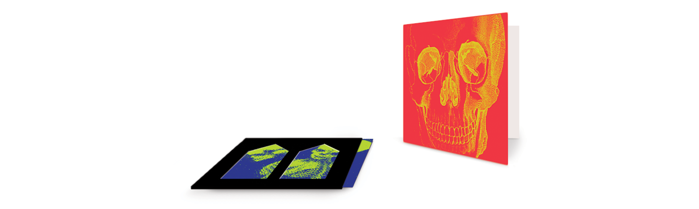
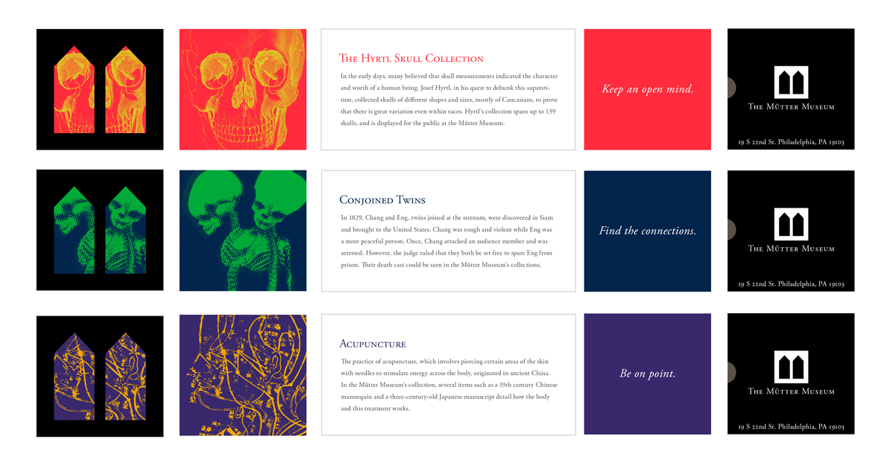
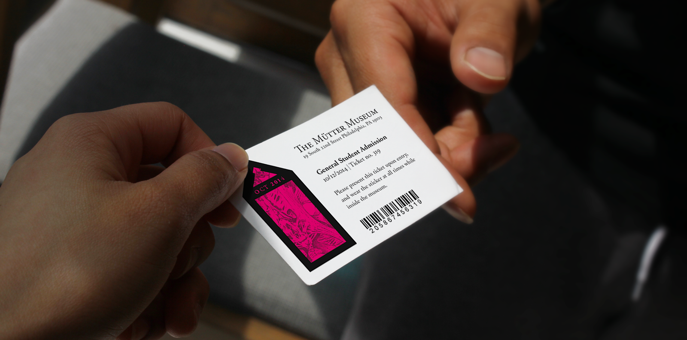
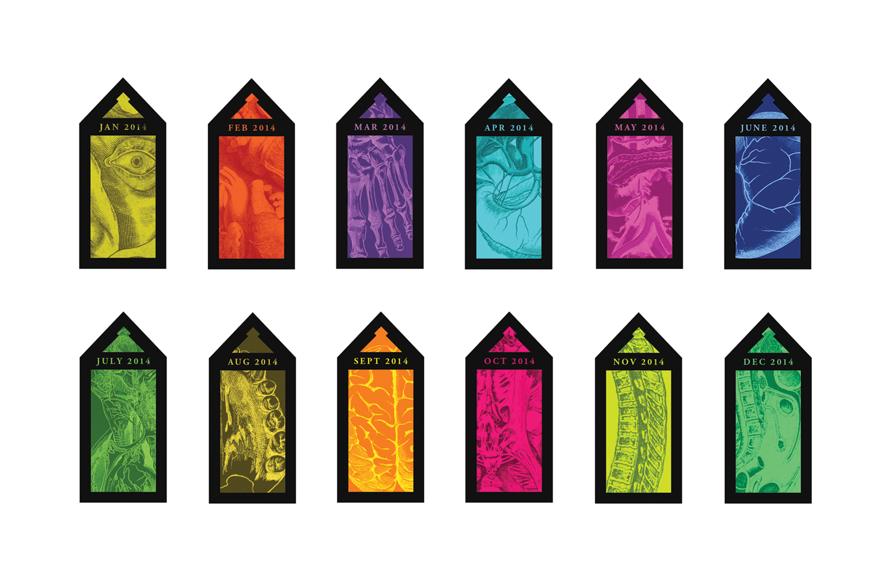

This rebranding of the museum’s identity brings its historical aspect into a contemporary mark, which takes the form of a case—a nod to the Mütter’s 19th century Victorian cabinet presentation style and its goal to inform the public. This opens opportunities for visual play, invoking the museum’s sense of fun, curiosity and eccentricity.
Speculative Work:
The Mütter Museum
Image Credits:
College of Physicians Digital Library
Mütter Museum website
Mütter Museum youtube channel
The stationery system aims for the clean, corporate look. Images evoking visual wordplay are introduced as a textural element to balance out the structured forms. The same idea is carried over to the membership cards. Function-wise, members need to be able to have this at all times, thus, a small die-cut taking an element of the logo is used to serve as a tag for keychains.
 The detailed medical illustrations are carried over to their other pieces. While the internal documents follow the corporate branding style, a touch of color is introduced to their marketing materials to give more life to the brand. Promotional cards play on the concept of little curiosities. Each card contains trivia, reflecting the museum’s aim to educate people and to showcase their collection.
 Visitor tags will be stickers, with the logo reinterpreted into specimen jars. Returning visitors could have their own collection as the stickers change every month.

Other pieces like signage also incorporate the “cabinet” aspect of the logo. These promote the museum and its current and visiting exhibitions.